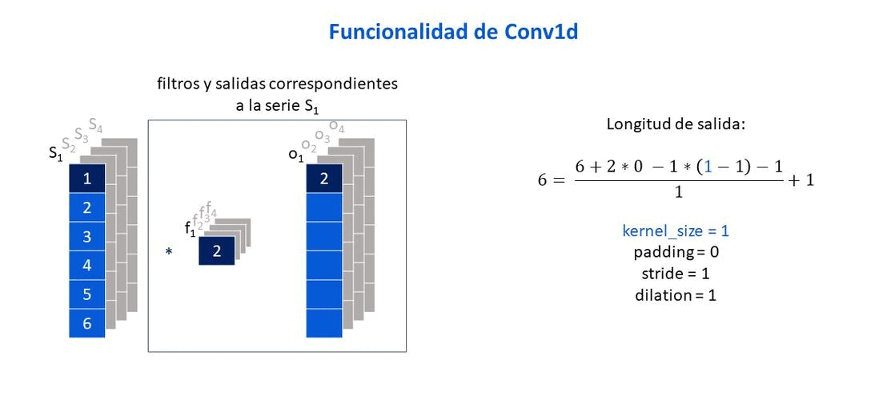
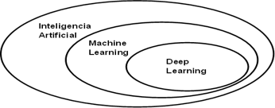
Tomada de: Deep learning with R de Chollet y Allaire (2018).
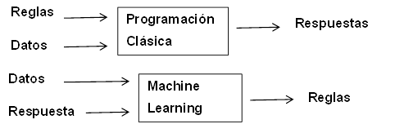
Tomada de: Deep learning with R de Chollet y Allaire (2018).

Tomada de: Tema 14: redes neuronales de Larrañaga (2007).
Elaboración propia: Elaborada a partir de Jing (2020). Muestra como el tamaño del vector de salida cambia según el tamaño de filtro que se usa.
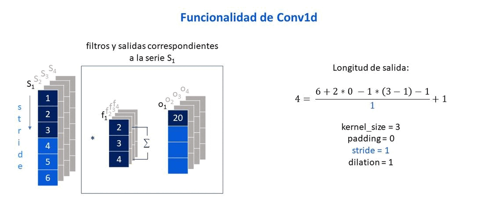
Elaboración propia: Elaborada a partir de Jing (2020). Muestra como el parámetro stride afecta el tamaño del vector de salida.
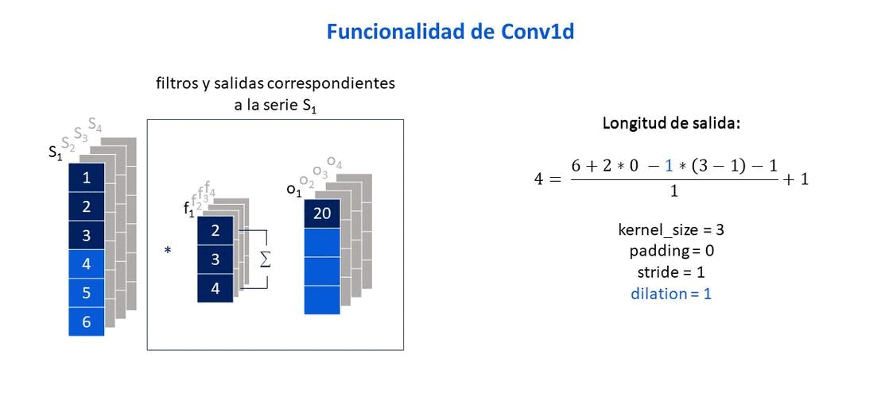
Elaboración propia: Elaborada a partir de Jing (2020). Muestra como el parámetro dilation afecta el tamaño del vector de salida.
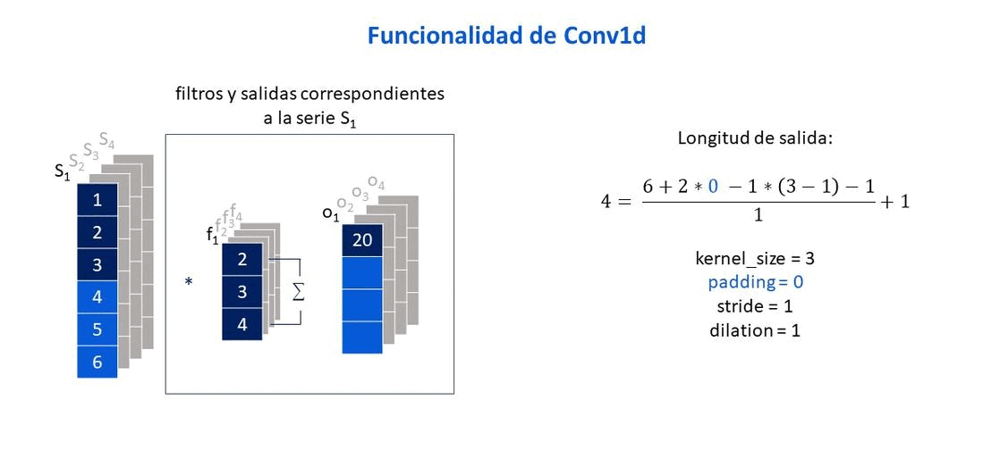
Elaboración propia: Elaborada a partir de Jing (2020). Muestra como el parámetro padding afecta el tamaño del vector de salida.
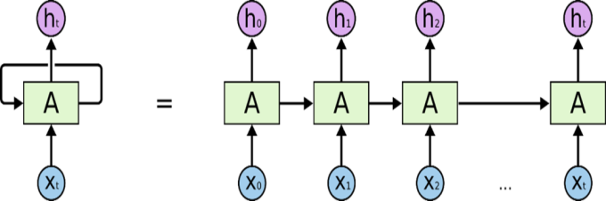
Tomada de: Understanding LSTM networks, Olah (2015).
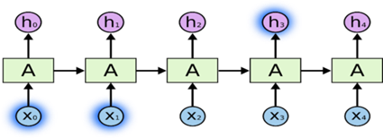
Tomada de: Understanding LSTM networks, Olah (2015).
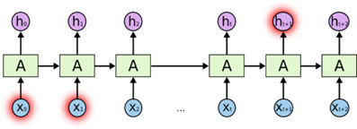
Tomada de: Understanding LSTM networks, Olah (2015).
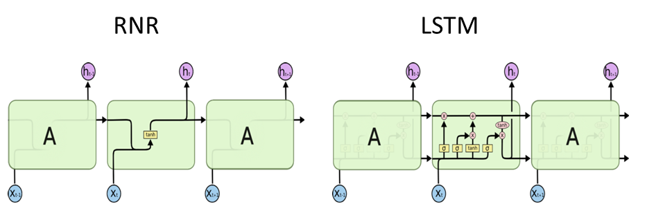
Tomada de: Understanding LSTM networks, Olah (2015).
Tomada de: Understanding LSTM networks, Olah (2015).
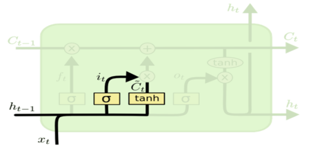
Tomada de: Understanding LSTM networks, Olah (2015).
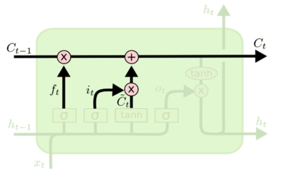
Tomada de: Understanding LSTM networks, Olah (2015).
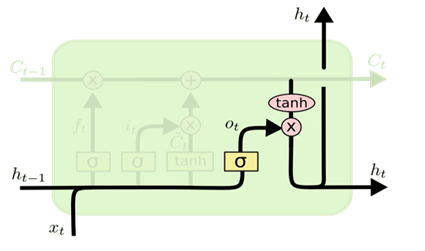
Tomada de: Understanding LSTM networks, Olah (2015).
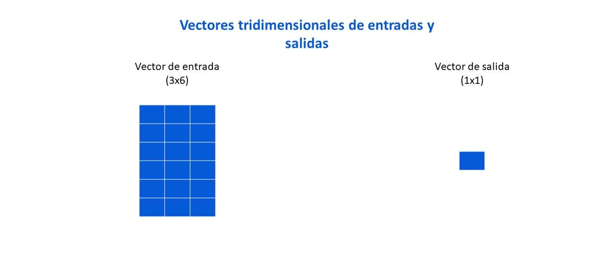
Elaboración propia: Elaborada a partir de imagen en Chollet y Allaire (2018). Muestra como lucen los vectores tridimensionales de entradas y salidas correspondientes a los datos de una empresa, en el caso de que se usen tres observaciones para crear el vector de entrada.
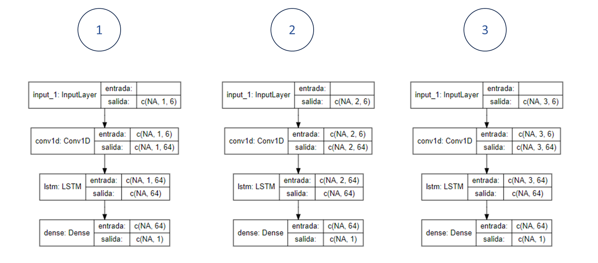
Elaboración propia: Elaborada a partir de las distintos modelos construidos usando los paquetes keras y tensorflow en R, y fueron gráficadas mediante el uso del paquete Iannone (2023).

Elaboración propia: Elaborada a partir de las imagenes que se observan en Rallabandi (2023).
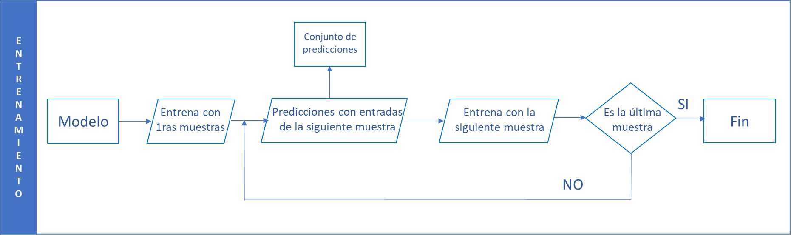
Elaboración propia